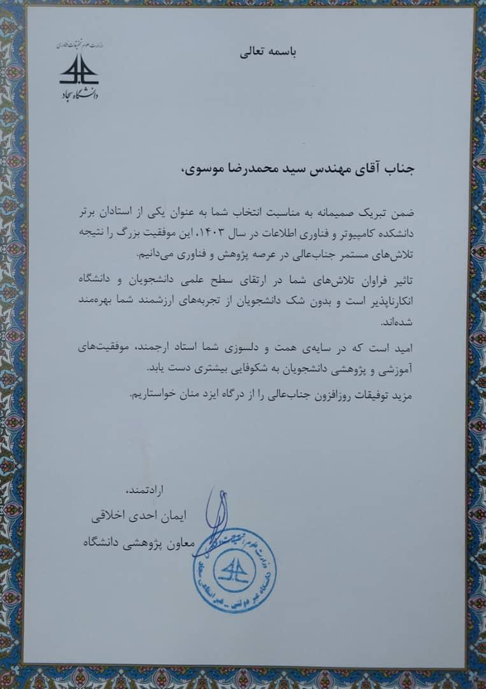

Honors & Awards
- 🥇 Ranked First in B.Sc. class, Islamic Azad University of Mashhad (2016)
- 🏅 Ranked Second among top 5% of M.Sc. class, Sadjad University of Technology (2020)
- 📘 M.Sc. Thesis scored 18.5/20 – English Handwritten Recognition using Deep Neural Networks
- 🎖️ Recognized for outstanding contribution to Camera Calibration and SLAM Software Systems at Software Motion (2024)
🏅 Top Lecturer Award – Computer Science Department
Institution: Sadjad Industrial University
Date: March 2025
Received the Excellence in Teaching and Research Award for my contributions in teaching, research, and mentorship in the Computer Science and IT Department. This recognition celebrates my commitment to advancing academic excellence in AI, machine learning, and computer vision.
